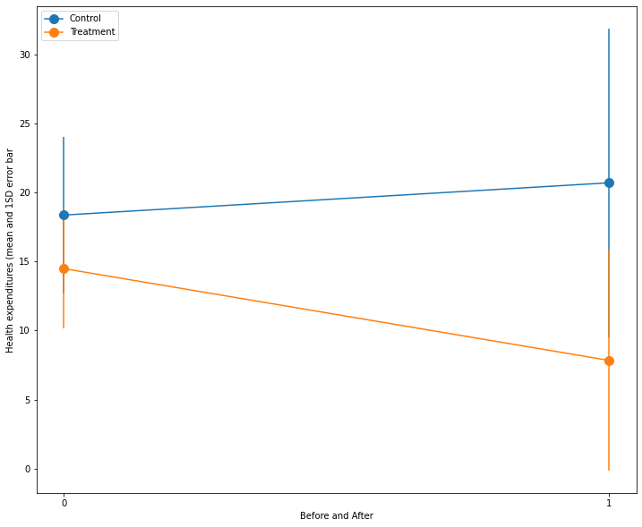

5. Difference in differences#
# Install and load packages
import pandas as pd
import numpy as np
import matplotlib.pyplot as plt
import seaborn as sns
import wbgapi as wb
from math import log
from linearmodels import PanelOLS
import statsmodels.api as sm
from linearmodels.panel import PooledOLS
import pandas as pd
import statsmodels.formula.api as sm
import numpy as np
import patsy
from linearmodels.panel import PanelOLS as fe
---------------------------------------------------------------------------
ModuleNotFoundError Traceback (most recent call last)
Cell In[1], line 9
7 import wbgapi as wb
8 from math import log
----> 9 from linearmodels import PanelOLS
10 import statsmodels.api as sm
11 from linearmodels.panel import PooledOLS
ModuleNotFoundError: No module named 'linearmodels'
5.1. 2 by 2#
data = pd.read_stata("https://github.com/worldbank/r-econ-visual-library/raw/master/Library/Data/evaluation.dta")
data["enrolled"] = data["enrolled"].astype("category")
data["enrolled"] = data["enrolled"].cat.rename_categories(["Control","Treatment"])
data2= (data
.groupby(['enrolled', 'round'])
.agg({'enrolled':'first', 'round':'first',
'health_expenditures': ['mean', 'std']
}))
data2.columns = ["_".join(x) for x in data2.columns]
data2=data2.reset_index(drop=True)
dfp = data2.pivot(index='round_first', columns='enrolled_first', values='health_expenditures_mean')
yerr = data2.pivot(index='round_first', columns='enrolled_first', values='health_expenditures_std')
dfp.plot(
figsize=(12, 10),
marker='.',
markersize=20,
title='',
xlabel='Before and After',
ylabel='Health expenditures (mean and 1SD error bar',
yerr = yerr,
xticks=data2['round_first'].drop_duplicates().sort_values().astype('int'))
plt.legend(loc="upper left")
plt.show();

5.2. Fixed Effects#
data = pd.read_stata("https://github.com/worldbank/r-econ-visual-library/raw/master/Library/Data/autor-jole-2003.dta")
data2 = data[data['year'] >= 79.0]
data3 = data2[data2['year'] <= 95.0]
data4 = data3[data3['state'] != 98.0]
data4['year'] = pd.to_numeric(data4['year'])
data4["trend"] = data4["year"]-78
data4["state_trend"] = data4["state"]+data4["trend"]
# data4['state_trend'] = [(s,y) for s,y in zip(data4.state, data4.trend)]
data4['annemp'] = pd.to_numeric(data4['annemp'])
data4["state_year"] = [(s,y) for s,y in zip(data4.state, data4.year)]
# data4
admico_list = ["admico_2", "admico_1", "admico0", "admico1", "admico2", "admico3", "mico4"]
data5 = data4[['state', 'year','state_year', 'state_trend','annemp', 'lnths','admico_2', 'admico_1', 'admico0', 'admico1', 'admico2', 'admico3', 'mico4', 'admppa_2', 'admppa_1', 'admppa0', 'admppa1', 'admppa2', 'admppa3', 'mppa4','admgfa_2','admgfa_1', 'admgfa0','admgfa1', 'admgfa2','admgfa3', 'mgfa4', 'trend']]
data5_reset=data5.set_index(['state', 'state_trend'])
formula = '''lnths ~
np.log(data5_reset.annemp) + + admico_2 + admico_1 + admico0 + admico1 + admico2 + admico3 + mico4 + admppa_2 + admppa_1 + admppa0 + admppa1 + admppa2 + admppa3 + mppa4 + admgfa_2 + admgfa_1 + admgfa0 + admgfa1 + admgfa2 + admgfa3 + mgfa4 - 1
'''
y, x_data = patsy.dmatrices(formula, data5_reset, return_type = 'dataframe')
fixed = fe(y, exog = x_data, entity_effects = True, time_effects = True, drop_absorbed=True).fit(cov_type = 'clustered', cluster_entity = True)
# fixed.summary().tables[1]
df_a = np.float_(pd.DataFrame(fixed.summary.tables[1].data).iloc[2:9, [1, 5, 6]]) * 100 + 7.9
df_a
df = pd.DataFrame(df_a, columns=['point', 'l', 'u'])
df['admico'] = admico_list
df['xpos'] = range(len(admico_list))
df1 = pd.melt(df, id_vars=['point', 'admico', 'xpos'], value_vars=['l', 'u'])
fig = plt.figure(figsize=(8, 5), facecolor = 'white')
ax = fig.add_axes([.1, 1, 1, 1])
plt.scatter('xpos', 'point', data = df1, c = 'black')
for i in admico_list:
ref_data = df1[df1.admico ==i]
plt.plot('xpos', 'value', data = ref_data, c = 'black')
ax.spines[['top', 'right']].set_visible(False)
plt.xlabel("\nTime relative to adoption of implied contract exception", size = 14)
plt.ylabel("Log points", size = 14)
plt.axhline(0, lw = 1, c = "black")
x_lbls = [
'2 Years\n prior', '1 Year\n prior', 'Year of\n adoption',
'1 Year\n After', '2 Years\n After', '3 Years\n After',
'4 + Years\n After'
]
ax.set_xticklabels(x_lbls)
ax.set_xticks(range(len(x_lbls)))
plt.show();
C:\Users\Jhon\AppData\Local\Temp\ipykernel_4256\4227953583.py:20: UserWarning: FixedFormatter should only be used together with FixedLocator
ax.set_xticklabels(x_lbls)
[<matplotlib.axis.XTick at 0x23b7d3496d0>,
<matplotlib.axis.XTick at 0x23b7d3496a0>,
<matplotlib.axis.XTick at 0x23b7d3561f0>,
<matplotlib.axis.XTick at 0x23b7d321c40>,
<matplotlib.axis.XTick at 0x23b7d321310>,
<matplotlib.axis.XTick at 0x23b7d325a60>,
<matplotlib.axis.XTick at 0x23b7d3217c0>]